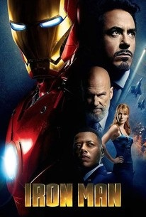
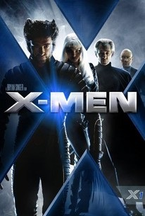
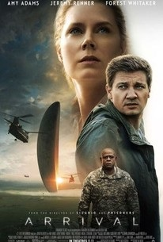

Billionaire industrialist and genius inventor Tony Stark is kidnapped and forced to build a devastating weapon. Instead, using his intelligence and ingenuity, Tony builds a high-tech suit of armor and escapes captivity. When he uncovers a nefarious plot with global implications, he dons his powerful armor and vows to protect the world as Iron Man.

One of the most popular superhero teams in comic book history finally comes to the screen in this big-budget adaptation of the long-running Marvel Comics series. Psychic Professor Xavier (Patrick Stewart) leads a school of skilled mutants called X-Men, a peacekeeping force to safeguard the world against a race of genetically mutated humans known as Homo Sapiens Superior. However, Magneto (Ian McKellen), a mutant with a powerful magnetic charge, has also begun to organize a team to strike first against what he believes to be a threat from humanity. When he kidnaps Rogue (Anna Paquin) from the X-Men's compound, Xavier and his forces must rescue her, even as they continue to vie with Magneto for the fearsomely strong mutant battler Wolverine (Hugh Jackman). Both Xavier and Magneto also have to contend with Senator Kelly (Bruce Davison), a heartless political leader who wants a final solution against mutants on both sides. Fighting for the forces of virtue with the X-Men are Famke Janssen as Jean Grey, Halle Berry as Storm, and James Marsden as Cyclops; Rebecca Romjin-Stamos as Mystique, Ray Park as the Toad, and Tyler Mane as Sabretooth are the minions of Magneto. ~ Mark Deming, Rovi

When mysterious spacecraft touch down across the globe, an elite team--lead by expert linguist Louise Banks (Amy Adams)--are brought together to investigate. As mankind teeters on the verge of global war, Banks and the team race against time for answers--and to find them, she will take a chance that could threaten her life, and quite possibly humanity.